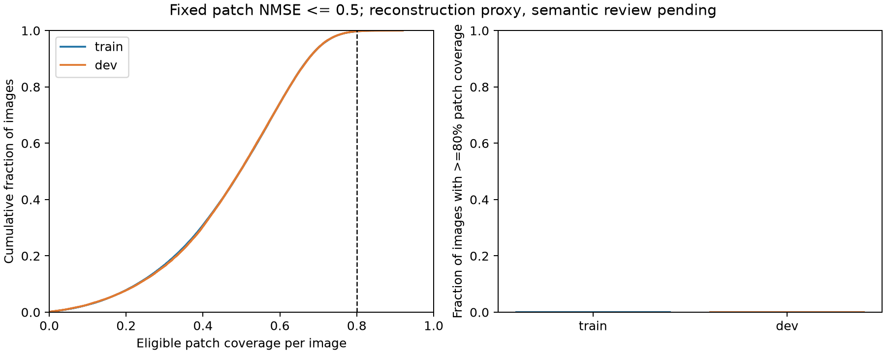
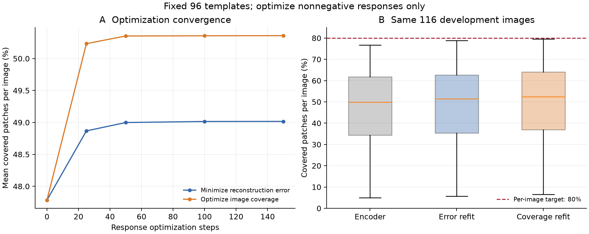
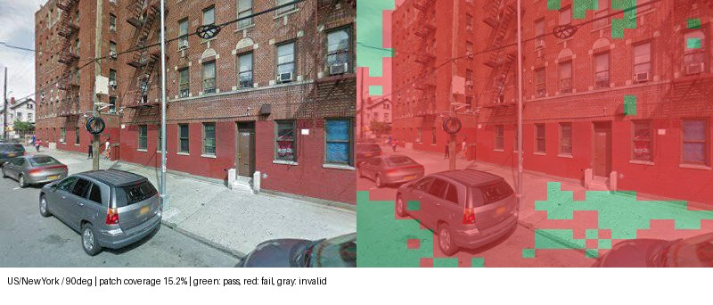
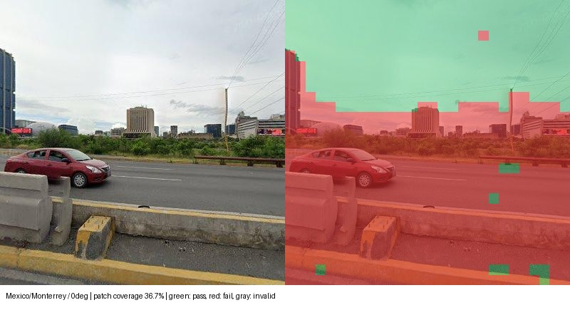
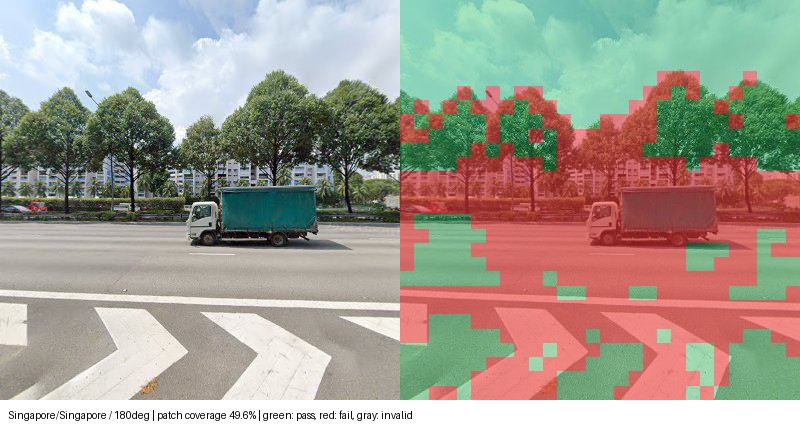
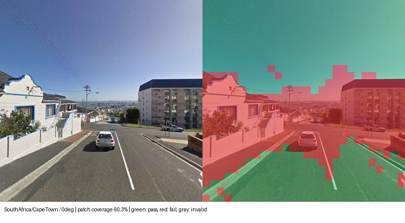
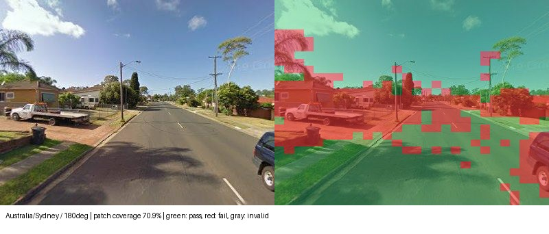

景观原型：覆盖率与诊断
96个共享局部模板，能否让每张街景至少80%的patch达到重建质量要求？
本页复用当前DINOv3 ViT-L、panorama-aware、W4096/K32主SAE的完整稀疏激活。 原型层使用29城市、86,038个全景；Moscow原图映射未核实，暂未纳入。它与语义地图中固定的3,712个验证全景分析范围不同。
什么叫一个patch被覆盖？
每个方向是一张28×28×4096的激活图。输入按训练集每维正激活RMS标准化并截断至8，
在目标激活能量>10−8的patch上计算 NMSE = ||重建激活 − 目标激活||² / ||目标激活||²。
只有NMSE≤0.5才计为覆盖；一张图至少80%的有效patch覆盖才算达标。784个patch全部有效时，需要至少628个达标。
这是预先固定的探索性重建判据；重建达标尚不等于语义解释成立。本次完整评分没有剔除任何无效patch，不能用全数据平均覆盖替代逐图达标要求。
完整训练与开发集评分
3×3、7×7、15×15三个尺度各32个模板，共96个；非负秩4模板，训练8轮。 按1公里空间块划分新增原型层，同一全景四方向不跨组。最终测试集13,050个全景、52,200张方向图保持封存。
| 划分 | 方向图像 | 平均patch覆盖 | 图像达标数（比例） | 四方向全达标全景 |
|---|---|---|---|---|
| 训练 | 240,932 | 47.31% | 679（0.282%） | 2/60,233 |
| 开发 | 51,020 | 47.38% | 141（0.276%） | 0/12,755 |


训练与开发集平均覆盖接近，二者均明显低于目标。这一观察不能单独确定结构瓶颈，需进一步检查冻结模板能否通过更充分的响应求解提高覆盖。
冻结96个模板，只优化图像响应
29座城市各取1个开发集全景，四方向共116张图。模板固定，从编码器响应开始， 每张图分别运行两条150步优化路线，不加响应稀疏惩罚；每条路线保留观测到的最佳硬覆盖。
| 方法 | 平均patch覆盖 | 低10%分位覆盖 | 达标图像 | 平均图像NMSE |
|---|---|---|---|---|
| 原编码器 | 47.8% | 22.1% | 0/116 | 0.533 |
| 只降重建误差 | 49.1% | 24.4% | 0/116 | 0.524 |
| 直接优化逐图覆盖 | 50.4% | 26.2% | 0/116 | 0.527 |


直接优化覆盖带来2.65个百分点的平均提升，但仍无图达标。 约50步后曲线趋于稳定；50到150步的平均覆盖只增加约0.006个百分点。 应优先检验模板数量、秩和空间约束，只延长当前响应优化可能收益有限。
有限步求解不是模板表达能力的理论上限，也不能单独确定哪项结构约束负责。 本次诊断在GPU 1运行约134秒，原模板权重未改变，测试集未使用。
不同覆盖水平的原图实例
按完整开发集覆盖分布的5%、25%、50%、75%、95%分位数选择。 绿色patch达到NMSE≤0.5，红色未达到，灰色为无有效目标激活。点击图片可放大；这些图展示重建覆盖，不是语义分割。










后续待办
- 模板数量调参：相同划分下比较每尺度16 / 32 / 64个模板，检查覆盖、有效模板数、语义重复与跨种子稳定性。
- 模板结构对照：检验更高秩和空间约束变化是否改善难例；尚未启动。
- 核查模板组成和原图证据，独立判断语义一致性，不能用重建覆盖代替语义结论。
冻结SAE曾见过部分开发和测试图像，因此本页空间留出仅针对新增原型层。